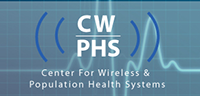

| In this newsletter: • Update • Precision Medicine • Software Release • Webinar Series • Honors, Recognition • Additions to MD2K • Upcoming Events • Profiles in Excellence: CWPHS • Stanford Mobilize • |
The MD2K Center is still in its first calendar year, but has already begun Year 2 as an NIH Center of Excellence. It’s been a very exciting time. In this newsletter, we’ll tell you about some of our sensor tools, MD2K’s participation in the Precision Medicine Initiative, the launch of our webinar series, some new faces at MD2K, upcoming events, and introduce you to one of our MD2K sites as well as a center in the broader BD2K community.
Our first newsletter begins with an update from Center Director Dr. Santosh Kumar of the University of Memphis:
Since its launch last October, the NIH Center of Excellence for Mobile Sensor Data-to-Knowledge (MD2K) has witnessed several exciting new developments:The MD2K Center is using five sources of mobile sensor data to reduce hospital readmission in congestive heart failure patients and to improve smoking cessation.
The first source is a wearable chest-band called AutoSense that collects electrocardiogram (ECG), respiration and accelerometry and can be used to monitor stress (continuously from ECG and/or respiration) and smoking (from respiration). Second is a smart-watch with inertial sensors that can infer smoking and eating events by tracking arm movements of an individual. The center is conducting testing to determine the best smart-watch to use for this purpose. In addition to monitoring eating and smoking behaviors, the display or vibration of a smart-watch can also be used to deliver sensor-triggered intervention. The third source is a radio frequency (RF) based micro-radar sensor, called EasySense, which can non-invasively measure heart activity and lung fluid volume in congestive heart failure patients. Fourth is a smart eyeglass that captures video in the direction of a wearer’s gaze. This is used to detect exposure to smoking cues, such as seeing a cigarette advertisement, and simultaneously assessing the state of the person (e.g., fatigue) by monitoring the eye itself. Finally, data from the smart-phone’s Global Positioning System can be used to infer geo-exposure for factors such as proximity to point-of-sale for tobacco or proximity to fast food (sodium rich) restaurants. MD2K is developing innovative tools to make it easier to collect, integrate, manage, visualize, analyze and interpret health data generated by mobile and wearable sensors such as the ones mentioned above. The goal of the big data solutions being developed by MD2K is to reliably quantify physical, biological, behavioral, social and environmental factors that contribute to health and disease risk. The Data Research core is in the process of putting all the infrastructure in place for the studies that will be conducted in Year 2 on smoking cessation and congestive heart failure. Plans call for formalizing the structure of the studies during the summer, with enrollment starting in July for congestive heart failure and mid-September for smoking cessation, pending approval of the studies’ designs. Refining the ability to collect such comprehensive measurements (when combined with other data sources, such as genomics and electronic health records) can herald a new future of medicine — known as precision medicine — where treatments and drugs can be tailored to each person to have maximum efficacy with minimum side effects. The Precision Medicine Initiative that was announced by President Obama in January is targeted toward realizing this vision of improved precision medicine. More than a million participants are being recruited from across the country to collect and contribute comprehensive data about themselves. – Santosh Kumar |

Dr. Kevin Patrick and Dr. Santosh Kumar at a NIH workshop on precision medicine. |
In February, Santosh Kumar, Ph.D., University of Memphis, and MD2K team member Kevin Patrick, MD, University of California, San Diego, were a part of a small group of scientists invited to Washington, D.C., to participate in an NIH-sponsored workshop to present their recommendations on incorporating mobile technologies in the Precision Medicine Initiative. The $215 million initiative, announced by President Obama in January, is aimed at accelerating patient-oriented biomedical research to give doctors more ways to tailor treatment to individual patients’ genetic makeup.
The Precision Medicine Initiative (PMI) amplifies the significance and societal impact of the research already underway at the MD2K Center. One of the goals of PMI is to assemble a research cohort of 1 million individuals to enable researchers to create more individualized treatments for disease.
Dr. Kumar said the initiative is a lifetime opportunity for the scientific community. “By incorporating mobile health sensors in such a large cohort, we will have the first-ever opportunity to continuously monitor changes in health, behavior, and environment risk factors that are responsible for over 40% of deaths but have never been measured objectively in the natural environment. Mobile health will also open the doors to deliver precision medicine interventions on a mobile device when and where needed, to optimize health and wellness.”
Patrick is equally excited. “This initiative is a terrific opportunity to extend the efforts that both Santosh and I have been involved in since 2007 when we were among the group of PI’s funded in the Gene-Environment Initiative. The aim of that program was to advance the science of measurement in the context of exposure biology, and now, with the Precision Medicine project, we can take the tools and systems that were developed with that support into the next-generation of medical care and public health.”
See video of the NIH workshop here.
By mid-fall, the MD2K Center plans to release the first version of mCerebrum, its mobile phone framework for collecting, analyzing and acting on data from wireless wearable mobile sensors. At the same time, it is scheduled to release Cerebral Cortex, its cloud-based data analytics platform for processing mobile sensor data and converting it into information, knowledge and, ultimately, action. Both platforms will be released for free under the BSD 2-clause open source license.
Upcoming software releases, new website
On June 1, MD2K also will launch a comprehensive web-based resource library called mHealthHUB, an online community where mHealth researchers can share the latest research, new products, datasets, software, news, meeting and job opportunities — as well as a place to exchange ideas.
Webinar Series
MD2K launched its webinar series in March and so far has held 3 webinars, each with increasing attendance:
May 21: Contactless Physiological Sensing in the Mobile Environment using Ultrawideband Radio-frequency Probes, presented by Emre Ertin, MD2K Platform Sensor Technologist and Professor at The Ohio State University.
April 30: Micro-randomized Trials for Just-In-Time Adaptive Intervention Development, presented by Susan A. Murphy, MD2K investigator, H.E. Robbins Distinguished University Professor of Statistics, Professor of Psychiatry and Research Professor, Institute for Social Research, University of Michigan.
March 23: Integration of GPS, GIS, and Accelerometer Data for Health Applications, presented by Kevin Patrick, Jacqueline Kerr, Fredric Raab and Marta Jankowska of the Center for Wireless and Population Health Systems at the University of California, San Diego.
A fourth webinar is planned for June 23: Using Open mHealth to break down the barriers to integration of digital health data, presented by Emerson Farrugia and David Haddad. Farrugia is Chief Software Architect for Open mHealth, and Haddad is Executive Director.
Each webinar is archived on the MD2K YouTube Channel.
 Dr. Susan Murphy |
Susan A. Murphy, Ph.D., principal investigator, was elected to the Institute of Medicine (IOM) in October 2014. Election to the IOM is considered one of the highest honors in the fields of health and medicine. New members are elected by current active members through a process that recognizes individuals who have made major contributions in the fields of medical sciences, public health and health care. Dr. Murphy is the H.E. Robbins Distinguished University Professor of Statistics, professor of psychiatry and research professor at the Institute for Social Research at the University of Michigan, Ann Arbor.
 Dr. William T. Abraham |
Cardiologist William T. Abraham, MD, principal investigator, was named to the Thomson-Reuters Highly Cited Researchers. Dr. Abraham, who was recognized in the category of clinical medicine, is one of only 3,000 researchers worldwide to earn this distinction, which recognizes researchers whose papers are listed in the Web of Science Core Collection and are among the top 1% most cited in their subject field according to Essential Science Indicators for the period of 2002-2013. He was also been listed as one of the Most Influential Scientific Minds of 2014. Dr. Abraham is Chair of Excellence in Cardiovascular Medicine, Professor of Internal Medicine, Chief of the Division of Cardiovascular Medicine, and Deputy Director of the Davis Heart and Lung Research Institute at The Ohio State University College of Medicine.
 Dr. Clay Marsh |
Clay Marsh, MD, principal investigator, has returned to his alma mater West Virginia University, to assume the post of Vice President and Executive Dean for Health Sciences at West Virginia University. He leads the academic health sciences center of WVU, which includes five schools – dentistry, medicine, nursing, pharmacy and public health – and numerous allied health programs and clinical operations around the state. Prior to joining WVU, Dr. Marsh was at the Ohio State University, where he was vice dean for innovation in the College of Medicine and established OSU’s IDEA Studio in Healthcare and Design.
Vivek Shetty, DDS, a professor of oral and maxillofacial surgery at the UCLA, joined MD2K as the lead of its training activities. Dr. Shetty also an Assistant Vice-Chancellor for Research at UCLA and is coordinating the NIH-funded mHealth Training Institutes, planned for August 24-28 at UCLA.
Four leaders from academia and industry have joined MD2K as members of its Executive Advisory Board: Dr. Steven M. Dubinett, director of the Clinical and Translational Science Institute at UCLA; Dr. Eric Fain, Group President of St. Jude Medical Group; Dr. Harry Shum, Executive Vice President for Technology and Research, Microsoft; and Dr. Victor Strecher, Director for Innovation and Social Entrepreneurship at the University of Michigan.
Syed ‘Monowar’ Hossain has joined the MD2K team as Lead Software Engineer. He is a Ph.D. Student in the Department of Computer Science at the University of Memphis.
Cheryl Hayes came aboard as Business Officer in April. She had worked with the University of Memphis’s Department of Computer Science since September 2003. She holds a MPS and a MBA from The University of Memphis.
Laura Wolf joined the staff in March as Training Specialist and Technical Writer. She previously worked in training and technical writing DuPont and earned a Master’s degree in Instructional Design and Technology from The University of Memphis in May.
mHealth Training Institute: The mHealth Training Institute 2015 will be held Aug. 24-28 at UCLA. A total of 30 mHealth researchers and 5 student researchers from MD2K will receive training in trans-disciplinary collaborations in mobile health.
MD2K Annual Meeting: The MD2K team will gather September 15 and 16 for the center’s second annual meeting.
We’d like for you to learn more about the different research institutions that comprise the MD2K Center and the greater Big Data-to-Knowledge (BD2K) community. This issue, we are focusing on the Center for Wireless & Population Health Systems at the University of California, San Diego, an MD2K participant, and the Stanford Mobilize Center, a BD2K institution.
Profiles in Excellence:
The Center for Wireless & Population Health Systems, University of California, San Diego
The Center for Wireless & Population Health Systems (CWPHS) is focused on improving the health of families, individuals, communities, social networks and populations through the creative use of networked and wireless technology and ubiquitous computing. The center also studies how to promote health and prevent disease and disability through interventions in clinical and community settings.
The Center’s director, Dr. Kevin Patrick, is a principal investigator for MD2K and a member of its innovation core.
CWPHS is within the UCSD of the California Institute for Telecommunications and Information Technology (Calit2). It includes scientists from a wide array of backgrounds, including clinical and preventive medicine, computer science and engineering, social networks, political science, psychology, electrical engineering, health behavior, system science, behavioral genetics, exercise and nutrition science, and evolutionary biology. Collaborators come from the UCSD School of Medicine, Division of Social Sciences, the Jacobs School of Engineering, the San Diego Supercomputer Center and San Diego State University.
The center’s recent research has addressed pediatric and adult obesity, depression, improving outcomes in cancer survivors, successful aging, using games to promote better health behaviors and the dynamics of health-related states in social networks.
Stanford Mobilize Center
The National Center for Mobility Data Integration to Insight, better known as the Stanford Mobilize Center, is another BD2K (Big Data to Knowledge) Center of Excellence funded by the National Institutes of Health (NIH). The Center’s goal is to help scientists make better use of the vast amounts of data collected by research labs that have been studying human movement, as well as the data collected by the increasing number of activity trackers and smart phone apps.
Headed by Scott Delp, Ph.D., professor of bioengineering and of mechanical engineering, the Center is working to better understand mobility and the conditions that limit it, such as injury, disease, age or lack of motivation.
Their research will focus on three health concerns: Cerebral Palsy Clinical Planning, Gait Rehabilitation Research (initially osteoarthritis and running injuries) and Increasing Physical Activity (such as for weight management). Their data science research will focus on Biomechanical Modeling, Statistical Learning, Behavioral and Social Modeling, Integrative Modeling and Prediction.
Plans are underway for collaboration between the MD2K Center and the Stanford Mobilize Center to share research algorithms. The two centers, which have complementary themes and a common interest in the use of mobile sensors, also plan to conduct joint webinars and educational programs.
Get more info
- Visit Our website
- Follow us on Twitter: @md2korg
- Follow us on YouTube
- Video summarizing MD2K